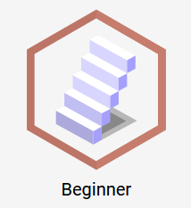

While tagging you can gain points and unlock badges. Both are reflected on the panel on the right.
Your points are shown at the top-right of the panel. For each tag that you enter you will receive +100 points.
Below your points you can see a collection of unlocked badges. Whenever your amount of tags across all images reaches a certain milestone, it will be displayed like the following example:

When hovering your mouse over a badge you will receive a tooltip stating what condition has been met to unlock it.